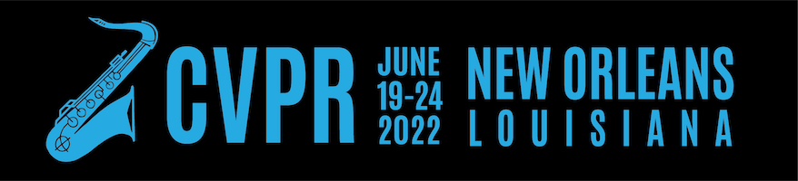

CVPR 2022 Tutorial:
Denoising Diffusion-based Generative Modeling:
Foundations and Applications


Overview
Denoising diffusion models, also known as score-based generative models, have recently emerged as a powerful class of generative models. They demonstrate astonishing results in high-fidelity image generation, often even outperforming generative adversarial networks. Importantly, they additionally offer strong sample diversity and faithful mode coverage of the learnt data distribution. This implies that denoising diffusion models are well suited for learning models of complex and diverse data. Denoising diffusion models define a forward diffusion process that maps data to noise by gradually perturbing the input data. Data generation is achieved using a learnt, parametrized reverse process that performs iterative denoising, starting from pure random noise (see figure above). Although diffusion models are relatively new, they have already found many successful applications. For instance, they have been used in computer vision for image editing, controllable, semantic, and text-driven image synthesis, image-to-image translation, superresolution, image segmentation, as well as 3D shape generation and completion.
In this tutorial, we recapitulate the foundations of denoising diffusion models, including both their discrete-step formulation as well as their differential equation-based description. We also discuss practical implementation details relevant for practitioners and highlight connections to other, existing generative models, thereby putting denoising diffusion models into a broader context. Moreover, we review recent technical extensions and advanced methods for accelerated sampling. Slow sampling has been the main weakness of denoising diffusion models. However, recently many promising techniques to overcome this challenge have emerged. To demonstrate how denoising diffusion models can be tailored to vision use cases, we also review successful applications in computer vision.
Considering diffusion models' unique strengths, this is, simultaneously offering high generation quality and also mode coverage and diversity, as well as recent works on fast sampling, we foresee that they will be adopted widely in computer vision and graphics. Unfortunately, diffusion models rely on fairly technical concepts, and as a result in many application domains the true potential of these models has not been unleashed yet, as the community working on them is still relatively small. The primary goal of this tutorial is to make diffusion models accessible to a wide computer vision audience by providing an introductory short course. This tutorial will build on simple concepts in generative learning and will provide fundamental knowledge to interested researchers and practitioners to start working in this exciting area.
Speakers
Schedule
| Title | Speaker | Slides | Time (CDT) |
|---|---|---|---|
| Introduction | Arash Vahdat | - | 08:30 - 08:40 |
| Denoising Diffusion Probabilistic Models | Arash Vahdat | - | 08:40 - 09:15 |
| Score-based Generative Modeling with Differential Equations | Karsten Kreis | - | 09:15 - 10:00 |
| Coffee Break | - | - | 10:00 - 10:30 |
| Advanced Techniques | Ruiqi Gao | - | 10:30 - 11:15 |
| Applications (1): Image Synthesis, Controllable and Semantic Generation, Text-to-Image | Ruiqi Gao | - | 11:15 - 11:30 |
| Applications (2): Image Editing, Image-to-Image, Superresolution, Segmentation | Arash Vahdat | - | 11:30 - 11:45 |
| Applications (3): Discrete State Models, 3D Generation, Medical Imaging, Video Synthesis | Karsten Kreis | - | 11:45 - 12:00 |
| Conclusions and Final Remarks | Arash Vahdat | - | 12:00 - 12:10 |
About Us
Karsten Kreis is a senior research scientist at NVIDIA’s Toronto AI Lab. Prior to joining NVIDIA, he worked on deep generative modeling at D-Wave Systems and co-founded Variational AI, a startup utilizing generative models for drug discovery. Before switching to deep learning, Karsten did his M.Sc. in quantum information theory at the Max Planck Institute for the Science of Light and his Ph.D. in computational and statistical physics at the Max Planck Institute for Polymer Research. Currently, Karsten's research focuses on developing novel generative learning methods as well as on applying deep generative models on problems in areas such as computer vision, graphics and digital artistry.
Ruiqi Gao is a research scientist at Google Brain. Her research interests are in statistical modeling and learning, with a focus on generative models and representation learning. She received her Ph.D. degree in statistics from the University of California, Los Angeles (UCLA) in 2021 working in the Center for Vision, Cognition, Learning, and Autonomy (VCLA), advised by Song-Chun Zhu and Ying Nian Wu. Her recent research themes include scalable training algorithms of deep generative models and applications in computer vision, natural language processing and neuroscience.

Arash Vahdat is a principal research scientist at NVIDIA research specializing in computer vision and machine learning. Before joining NVIDIA, he was a research scientist at D-Wave Systems where he worked on deep generative learning and weakly supervised learning. Prior to D-Wave, Arash was a research faculty member at Simon Fraser University (SFU), where he led research on deep video analysis and taught graduate-level courses on machine learning for big data. Arash obtained his Ph.D. and M.Sc. from SFU under Greg Mori’s supervision working on latent variable frameworks for visual analysis. His current areas of research include deep generative learning, weakly supervised learning, efficient neural networks, and probabilistic deep learning.